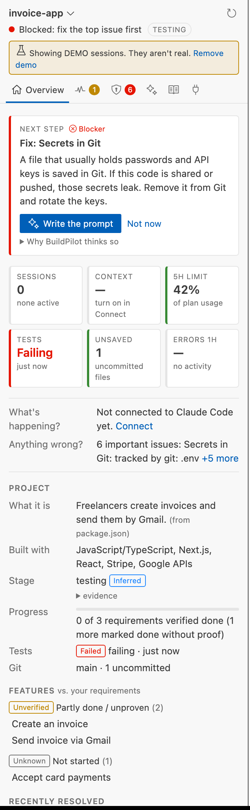
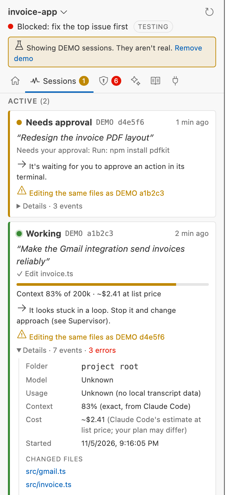
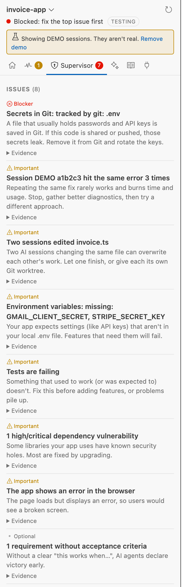
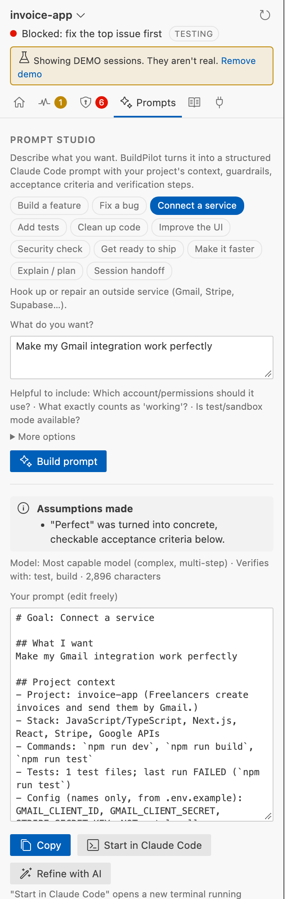
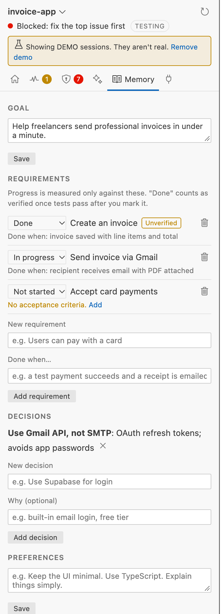
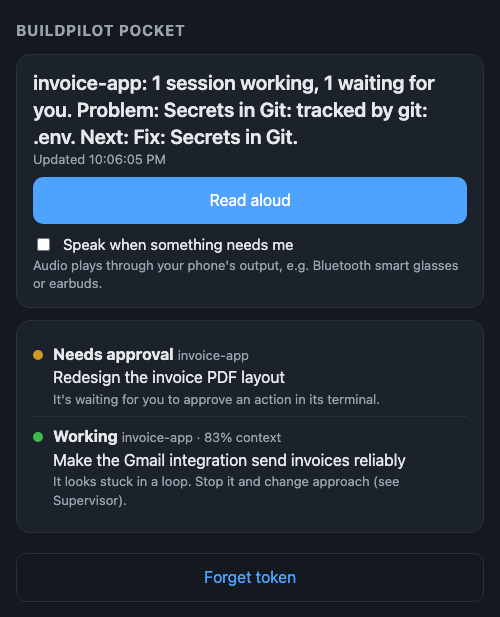

Know what's being built, what's broken, what matters next, and how to ship it correctly, without becoming an engineer.
To start using it:
| Where | What | How to undo |
|---|---|---|
| VS Code | The BuildPilot extension | Uninstall script (page 12) |
~/.claude/settings.json | Added background hooks (so BuildPilot sees each session's activity) and a status line (exact context %). Every other setting was kept, and a backup was saved first. | Uninstall script, or Connect → Disconnect |
~/.zshrc | A 3-line marked block so every new terminal shows BuildPilot and the bp command works (backed up first) | Uninstall script, or bp shell uninstall |
~/.buildpilot/ | BuildPilot's private local data (sessions, notes, backups) | Uninstall script moves it to the Trash |
You need Visual Studio Code and Claude Code installed. Node.js is optional (it lets the installer connect Claude Code for you).
Manual install: in VS Code, open the Command Palette (⌘⇧P) → Extensions: Install from VSIX… → choose BuildPilot 0.3.1.vsix.
claude in a terminal), or use Prompt Studio → Start in Claude Code. The session appears in Sessions instantly.
The one recommendation that matters most, ranked by severity, impact and urgency. It always says why, and Why BuildPilot thinks so shows the evidence it saw.
Six tiles, each clickable to where you act on it: Sessions (working / waiting for you), Context (fullest session's memory), 5h limit (your plan's rolling usage), Tests (passing or failing, and when), Unsaved (files not yet in Git), Errors 1h (agent failures in the last hour). A dash means unknown, never a guess. Hover (or use a screen reader) to hear why each number matters.
Plain-English status of your sessions (including ones waiting for you in other projects) and the most important problem.
What the product is, what it's built with, its stage (planning → prototyping → … → maintenance), progress, tests and Git state.
Your requirements sorted into Done & verified, Partly done / unproven and Not started. Something only counts as verified after tests pass, because "the AI said it's done" isn't proof.
Recommendations whose problem BuildPilot no longer observes. This is how it confirms a fix actually worked.

Each card shows what a session is doing right now, from Claude Code's own events. Nothing is guessed.
| Status | Meaning |
|---|---|
| ● Working | Actively running tools or thinking |
| ● Needs approval | Paused until you approve in its terminal |
| ● Needs input | Asked you a question |
| ● Idle | Finished; waiting for your next prompt |
| ● Failed | The AI service returned an error (e.g. rate limit) |
| ○ Unknown | Nothing heard for 10+ minutes. BuildPilot says so rather than pretend |
Sessions running in other folders appear at the top, so you see every agent across all your work, and VS Code tells you when one of them needs approval.
A compact summary (goal, requirements, state, what was already tried, next step) to paste into a fresh Claude Code session so nothing is lost.

Each issue says how serious it is (Blocker · Important · Worth doing · Optional), what it means in plain English, and the evidence. BuildPilot catches:
.env files saved in Git, missing settingsBuild, tests, secrets, dependencies, app loads, config, CI, deployment, rollback. Each item is marked Verified, Failed or Unknown, never "production-ready" on opinion.
Save checkpoint before anything risky. It snapshots every file without touching your branch. Later, changed since lists what differs, and you can restore just the files you pick (BuildPilot saves another checkpoint first, so even that is undoable).

| Goal | Use it when… | What it makes Claude do |
|---|---|---|
| Build a feature | adding something new | Plan first, follow existing patterns, handle empty/loading/error states, add tests |
| Fix a bug | something's broken | Reproduce, find the root cause (no guess-and-retry), failing test first, smallest fix |
| Connect a service | Gmail, Stripe, Supabase… | Check current docs, keys only in .env, handle expiry/limits/failures, real end-to-end test |
| Add tests | proving it works | Most important journey first, test behavior, one command to run |
| Clean up code | it's getting messy | No behavior change, small steps, tests before and after |
| Improve the UI | design & usability | Reuse your design system, every state, accessible, look at the result |
| Security check | before launch | Secrets, auth, input validation, highest risk first, honest limits |
| Get ready to ship | deploying | Build/tests pass, config listed, rollback plan, never deploys without asking |
| Make it faster | it's slow | Measure first, one bottleneck at a time, before/after numbers |
| Explain / plan | understanding | No file changes; plain English first, then the technical detail |
| Session handoff | starting fresh | Reads the handoff, confirms the state, continues without redoing work |

AI sessions start from zero. Memory is how BuildPilot carries your project's knowledge between them, and how it measures real progress.
One or two sentences: what you're building, for whom, what success looks like.
The things the product must do, each with a done when… line. Set the status as you go. Marking one Done counts as Unverified until a passing test run, then it becomes Verified automatically. Already have a checklist in a doc (- [ ] item)? Click Import from docs.
Choices you don't want undone ("Use Gmail API, not SMTP"). They're added to every prompt.
How you like to work ("Keep the UI minimal. Explain things simply."). Also added to every prompt.
Copy handoff, turn it into a ready prompt (Handoff prompt), or save it to .buildpilot/HANDOFF.md in your project.
Claude Code reads a CLAUDE.md file at the start of every session. Draft a CLAUDE.md writes one from your project (stack, commands, rules, decisions) and opens it unsaved for you to review. BuildPilot never overwrites your files.
Delete this project's data, or everything, any time.
mohil-bp-7k2q9.https://ntfy.sh/mohil-bp-7k2q9.You'll get alerts only when it matters: approval needed, a session failed, a loop, or a conflict. Slack and Discord incoming-webhook URLs work too. Only short alerts and the project name are sent, never code.

The link contains your private token. Send it only to yourself. Connect → New token disables old links instantly.
With the Integration API on, anything can ask BuildPilot for a one-sentence status. Copy the token from Connect → Copy token:
curl -H "Authorization: Bearer YOUR_TOKEN" "http://127.0.0.1:47821/v1/brief?format=text" # → "invoice-app: 1 session working, 1 waiting for you. Next: Fix the failing tests before building more."
On this Mac use 127.0.0.1 as above. From your phone, turn on Allow Lan and use your Mac's network address instead (the one shown in the Pocket link, e.g. http://192.168.1.20:47821). iOS Shortcut: Get Contents of URL (that address + /v1/brief?format=text, with header Authorization: Bearer …) → Speak Text. Name it "Build status" and say "Hey Siri, build status." Other endpoints: /v1/status, /v1/sessions, /v1/next, and POST /v1/prompt to generate a prompt. The API is read-only: it can't run anything or change files.
Every new terminal (Terminal, iTerm, or VS Code's own) starts with a short summary of all your Claude Code sessions, across every project:
◆ BuildPilot · 3 Claude sessions · 1 needs you · 5-hour limit 42% ! api needs approval Needs your approval: Run: npm publish context 12% ● web-app working "Add a pricing page with three plans" context 37% ○ invoice-app idle Finished its last response context 64% Here invoice-app Next: Fix the failing tests before building more bp = details · bp open = BuildPilot in VS Code · bp prompt <goal> "<what you want>"
Sessions that need you are always listed first. Every state is a word (needs approval, working, idle), not just a color. Here shows the next step for the folder you're in. It's fast (about 0.3 s) because it reads what BuildPilot already knows, without re-analyzing.
| Type | To |
|---|---|
bp | see the full status of the project you're in: stage, health, issues, next step |
bp open | jump to BuildPilot in VS Code for this folder (opens the folder if needed) |
bp prompt bugfix "…" | get an expert Claude Code prompt right in the terminal |
bp sessions · bp handoff · bp audit | sessions here · a handoff for a fresh session · dependency check |
bp --help | everything else |
Opening a terminal, or starting a new Claude Code session in your project, also opens the BuildPilot panel beside it. Your cursor stays in the terminal. Turn this off in Connect → Terminal.
export BUILDPILOT_QUIET=1. Remove it entirely with Connect → Terminal → remove or bp shell uninstall. Your ~/.zshrc is restored exactly.| Label | Meaning | Example |
|---|---|---|
| Verified | Checked directly | Tests passed when BuildPilot ran them |
| Inferred | Its best reading of the evidence; could be wrong | Stage: testing |
| Unverified | Claimed or assumed, not proven | You marked a requirement done; no passing test since |
| Failed | Checked, and it failed | Build exited with an error |
| Unknown | Not enough information | Cost on a subscription; a quiet session |
Evidence lines are tagged seen (observed directly) or inferred.
~/.buildpilot/ on this Mac, readable only by you..env files, only the setting names are read, never the values.| Problem | Fix |
|---|---|
| No BuildPilot icon | Reload VS Code: ⌘⇧P → Reload Window. Still missing? Run the installer again. |
| "Open a project" | Open a folder in VS Code (File → Open Folder…), or click the project name at the top to pick one. |
| A session doesn't appear | Check Connect says Connected. A session appears on its next action; if not, exit and restart that Claude Code session. Sessions in other folders appear under Other projects. |
| Session shows Unknown | Nothing has been heard for 10+ minutes. It may be running a long command, or the terminal was closed. Check the terminal. |
| Context % shows Unknown | Connect → Exact context % → turn on. Numbers appear after that session's next reply. |
| "Settings file problem" | Your ~/.claude/settings.json has a typo. BuildPilot refuses to edit a broken file. Fix it (backups are in ~/.buildpilot/backups/) and click Connect again. |
| Run tests is greyed out | The project has no test script, or VS Code is in Restricted Mode (trust the folder). |
| Dependency check fails | Needs internet and a package-lock.json (run npm install once). Python needs pip install pip-audit. |
| Visual check: not reachable | Your app isn't running, or the address is wrong. Click Start the app first, or type the address shown in your app's terminal. |
| Phone can't open Pocket | Turn on Allow Lan, use the same Wi-Fi, and allow incoming connections for VS Code if macOS asks. |
| Too many suggestions | Click Not now (hides for 24 h). Pop-ups can be turned off: Settings → BuildPilot → Notifications → off. |
| See what BuildPilot is doing | View → Output → choose BuildPilot in the dropdown. |
Open Mission Control · New Prompt · Copy Session Handoff · Save Checkpoint · Run Tests · Check Dependencies · Visual Check · Show Brief · Getting Started · Connect / Disconnect · Show Exact Context % · Set Notification URL · Set Anthropic API Key · Load / Remove Demo Sessions · Delete Data
~/.zshrc is restored), removes the extension, and asks whether to move BuildPilot's data to the Trash.To only stop watching Claude Code: BuildPilot → Connect → Disconnect. Settings backups: ~/.buildpilot/backups/. Checkpoints live in your project's Git as refs/buildpilot/checkpoints/* and never affect your branches.
In any terminal, bp runs these (needs Node.js). The long form, from ~/buildpilot:
node dist/cli.js status [folder] # stage, health, issues, next step node dist/cli.js sessions [folder] # Claude Code sessions for a folder node dist/cli.js brief [folder] # one-sentence status node dist/cli.js handoff [folder] # handoff for a new session node dist/cli.js prompt bugfix "Checkout page is blank after paying" [folder] node dist/cli.js audit [folder] # dependency vulnerabilities node dist/cli.js visual [folder] [url] # check your running app + screenshot node dist/cli.js hooks status|install|uninstall node dist/cli.js statusline status|install|uninstall node dist/cli.js serve [folder] # Integration API without VS Code
| What | Where |
|---|---|
| This folder | ~/Desktop/BuildPilot/: guide, installer, uninstaller, extension file |
| Source code & technical docs | ~/buildpilot/ (README.md, docs/: architecture, security, testing, roadmap) |
| Local data | ~/.buildpilot/: database, settings backups, screenshots, API token |
| Claude Code settings | ~/.claude/settings.json |
Scripted multi-step visual tests · a native smart-glasses companion app · verified Windows & Linux support · audits for pnpm/yarn/bun · VS Code Marketplace publishing.